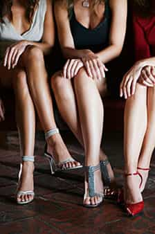

Daryush "Roosh" Valizadeh created ROK in October 2012. You can visit his blog at RooshV.com or follow him on Twitter and Facebook.


I would like to start a new column here at ROK called “The Perfect Woman” to highlight the attractive traits I like in women. I will go over all major body parts and personality to nail down what I believe most men will find most pleasing. Today’s topic is footwear.
If you read my blog, you know I like heels. It’s an important feminine accessory that highlights a girl’s legs and increases the roundness of her ass. It serves as a mating call to men that she is ready to receive male attention. I don’t have scientific proof, but I believe the higher a girl’s heels, the warmer response you’ll get.
I also look for heels as a quick obesity check. Fat girls don’t prefer high heels because their weight tends to cause immense pain in their feet. While heels aren’t exactly the most comfortable of footwear, thin girls can wear them daily without problems (it’s something you see in Eastern European countries). If a girl complains about wearing heels, it’s a guarantee that she’s either fat, masculine, or lazy.
And now for some pictures…

The higher the better! Please go back home with your 2-inch heel and change into something more proper.